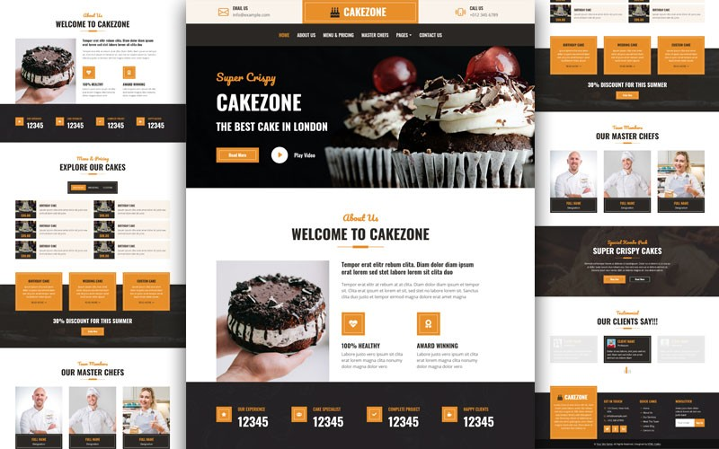

.jpg) Social media marketing (SMM) utilizes platforms like Facebook, Instagram, Twitter, and LinkedIn to engage
with customers, boost brand visibility, and drive website traffic [1]. By leveraging the interactive nature
of social networks, businesses can cultivate relationships and communities online, fostering customer
loyalty and brand advocacy
Social media marketing (SMM) utilizes platforms like Facebook, Instagram, Twitter, and LinkedIn to engage
with customers, boost brand visibility, and drive website traffic [1]. By leveraging the interactive nature
of social networks, businesses can cultivate relationships and communities online, fostering customer
loyalty and brand advocacy

Each social media platform requires a tailored approach due to differences in user demographics, content
preferences, and engagement stylesocial media marketing (SMM) utilizes platforms like Facebook, Instagram,
Twitter, and LinkedIn to engage
with customers, boost brand visibility, and drive website traffic [1]. By leveraging the interactive nature
of social networks, businesses can cultivate relationships and communities online, fostering customer
loyalty and brand advocacy
.jpg) Social media marketing isn't solely about promotional content; it's also about providing value and building
genuine connections. Brands can showcase their expertise through informative posts, engage in conversations
with followers, and demonstrate authenticity, thereby earning trust and credibility
Social media marketing isn't solely about promotional content; it's also about providing value and building
genuine connections. Brands can showcase their expertise through informative posts, engage in conversations
with followers, and demonstrate authenticity, thereby earning trust and credibility
 By focusing on delivering meaningful experiences rather than hard-selling, businesses can establish
themselves as trusted authorities within their niche, leading to long-term success in the digital landscape
By focusing on delivering meaningful experiences rather than hard-selling, businesses can establish
themselves as trusted authorities within their niche, leading to long-term success in the digital landscape